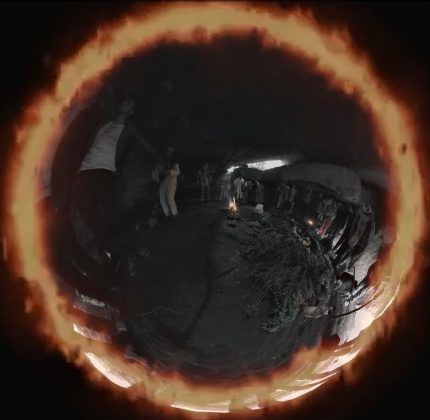
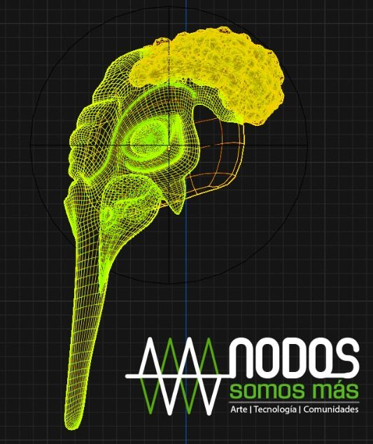
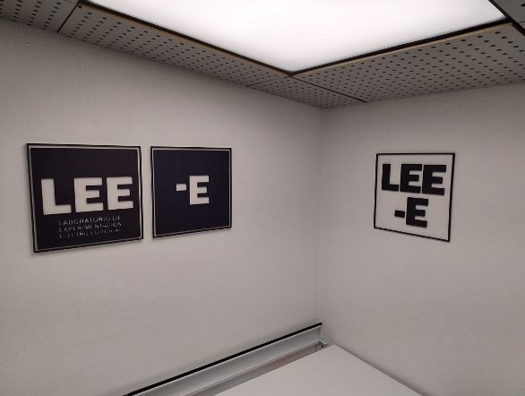
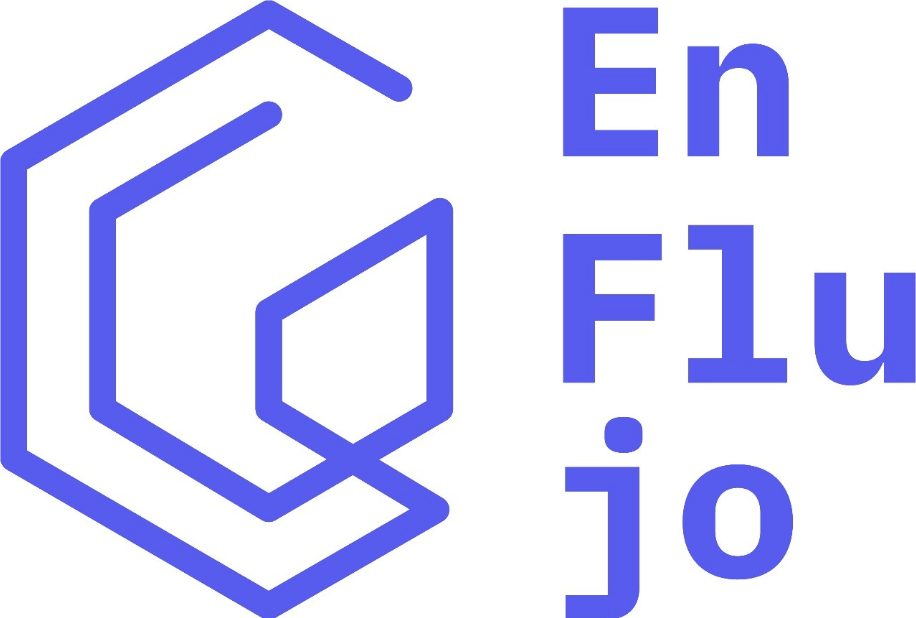
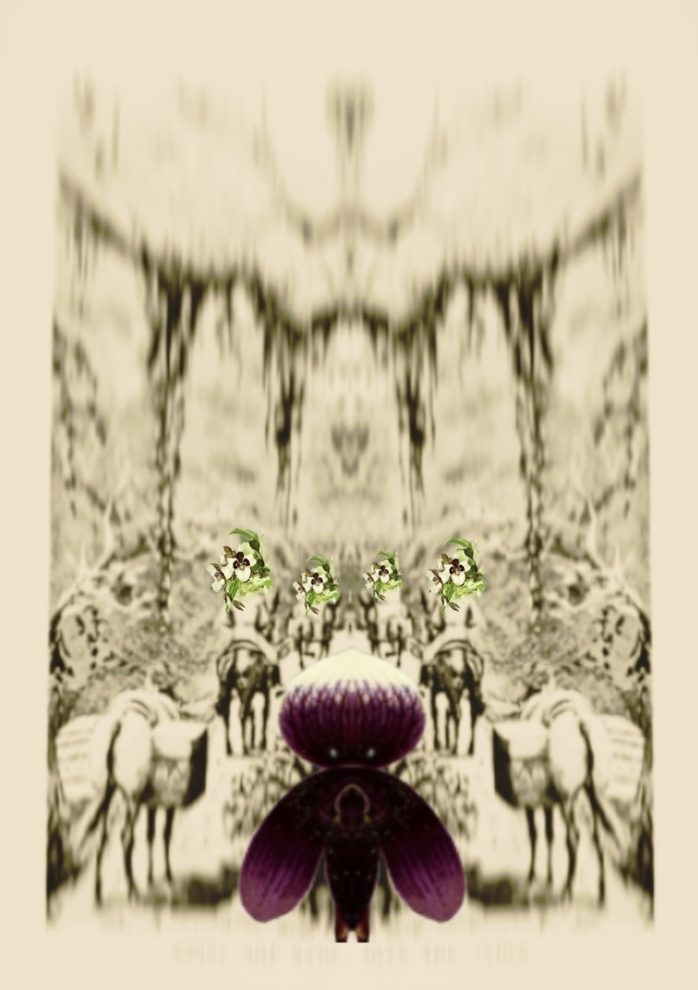
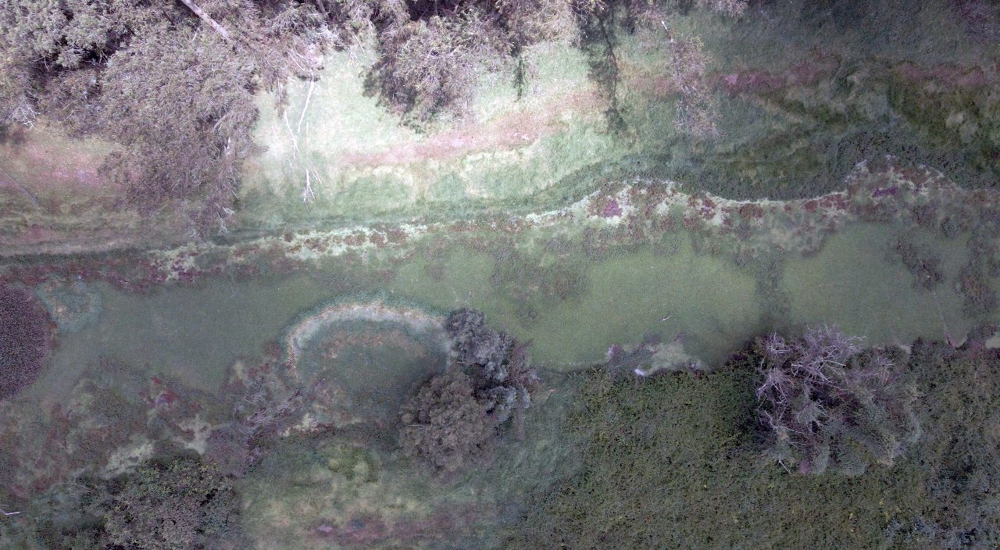

Las instalaciones se encuentran en la galería del edificio de la Facultad de Artes de la PUJ

TCHY • GATA:
fuego celeste y fuego terrestre
AUTORES:
Julián Jaramillo Arango, Departamento de Comunicación, PUJ
William Garibello Sáenz, Cabildo Indígena Muisca de Bosa (CIMB)
Semillero de Investigación en Medios Inmersivos VR&360
TCHY • GATA: fuego celeste y fuego terrestre interroga sobre las tradiciones de pensamiento y conocimiento amerindios, donde la circularidad y la lógica esférica constituyen un guía para ver y oír.
La instalación recrea la modalidad del círculo de palabra, que convoca a los sujetos al rededor del fuego para construir un camino entre el mundo terrestre y el mundo celeste, y así establecer comunicación entre humanos y no-humanos. La obra se generó en la confluencia entre el proyecto de investigación del profesor Julián Jaramillo “Escucha Ancestral, Audiovisiones, Paisajes Sonoros y Oídos no-humanos" y el proyecto de doctorado GA N HYQA de William Garibello. En agosto de 2024 el Semillero de Medios Inmersivos VR&360 realizó una salida de campo al parque arqueológico Las Piedras del Tunjo, en Facatativá, Cundinamarca con miembros del Cabildo Indígena Muisca de Bosa (CIMB). Junto a un grupo de sabedores y médicos ancestrales en la visita se realizó un ritual de ofrenda, se recorrió el parque dialogando sobre las pinturas rupestres y se elaboraron los materiales audiovisuales que nutren esta instalación.
Julián Jaramillo Arango
Soy artista, investigador y educador; profesor asistente de Comunicación en la Universidad Javeriana, director del Semillero de investigación en Medios Inmersivos vr&360 y beneficiario de las convocatorias 010 y 020 de la Vicerrectoría de Investigación. Obtuve el título de PhD en Artes en la Universidad de Sao Paulo, de MA en Multimedia en la Universidad Estadual de Campinas (Unicamp) en Brasil y de compositor musical en la Universidad de los Andes. Realicé estancias posdoctorales en la Universidad de Caldas y en la Universidad de Sao Paulo. Siendo becario del Icetex, Fapesp, Fundación Santander, Colciencias y Capes, a lo largo de cerca de veinte años de carrera artística y académica, he acumulado experiencias de investigación-creación en Colombia y Brasil en el campo de la Música y las Artes audiovisuales en su convergencia con la Ciencia y la Tecnología. Mis trabajos de performance audiovisual, música en red, diseño de Interfaces y sonificación han sido exhibidos en América, Europa y Asia. También soy curador y organizador del Panel de Sonología, evento que reúne investigadores de la región con producción académica y artística asociada a la escucha, el sonido y el audio. Como profesor de la Javeriana mi trabajo de investigación-creación se ha orientado hacia la incorporación de los medios inmersivos en asuntos relacionados a la crisis ambiental, la filosofía de escucha de los pueblos amerindios y el trabajo en territorio con comunidades.
William Garibello Sáenz
Miembro del Cabildo Indígena Muisca de Bosa (CIMB) ubicado en Bogotá D.C., y candidato a doctor en Comunicación, Lenguajes e Información de la Pontificia Universidad Javeriana de Bogotá. Aprendiz de medicina ancestral en mi comunidad con el interés de conocer más de nuestra cultura desde los saberes y la espiritualidad. Estudio la lengua Mhuysqa desde hace varios años. Trabajo como diseñador UIX y programador de interfaces de usuario en la Comisión Nacional del Servicio Civil. He trabajado en los dos años anteriores en proyectos de fortalecimiento en salud propia y de genealogía Mhuysqa para el CIMB como realizador de series documentales con pueblos nativos y diseño editorial. Mis estudios de maestría son en administración de negocios (MBA) y desarrollo web. Mi pregrado fue en Diseño gráfico. Mi mayor experiencia laboral es en las áreas de tecnologías de información y comunicaciones. Desde el año 2015 me reconocí como indígena Mhuysqa y fue reconocida mi familia por el CIMB en el mismo año. Mi lugar de enunciación como aborigen del pueblo Mhuysqa me lleva a plantear mi investigación de doctorado que se titula GA N HYQA.
Semillero de Investigación en Medios Inmersivos VR&360
El Semillero de Investigación en Medios Inmersivos VR&360 explora la convergencia entre los formatos de Realidad Virtual (VR) y el registro de sonido, imagen y video esféricos con equipos de captura 360. A través de metodologías basadas en la práctica, en donde se establece un laboratorio colaborativo de creación, que ahonda en la apropiación de técnicas y procedimientos de captura, procesamiento y distribución. En este sentido, el laboratorio se interroga sobre las lógicas y poéticas de los formatos inmersivos en distintas vertientes del trabajo en comunicación y artes, desde la creación y la producción audiovisual, hasta el desarrollo de videojuegos, el trabajo con comunidades, la reportería inmersiva, la antropología visual, la museografía digital y el arte electrónico.
Video. Juan Camilo León Ballesteros. Audio. Antonia Sofía Sanches. Montaje. Mariana Sánchez.

Espantapájaros videocartografías poéticas
AUTORES:
nodoscacharreolab: (Alejandro Araque & Felipe Andrés Rodríguez Sánchez)
Trabajo de campo: Festival de los Espantapájaros, las Mieles y los Guarapos organizado por la Asociación Campesina Ecovaral (Macanal, Boyacá)
El proyecto "Espantapájaros videocartografías poéticas" utiliza un enfoque de arte intermedial relacional, fusionando prácticas artísticas, cartografía crítica y saberes locales en un proceso colaborativo con las veredas de la Mesa, Tibacota y Perdiguiz en el municipio de Macanal (Boyacá). Este enfoque parte del territorio campesino como un espacio de construcción social del conocimiento, donde la co-creación y la resignificación del paisaje rural son fundamentales.
La obra integra la creación de espantapájaros como dispositivos culturales que trascienden su funcionalidad agrícola, simbolizando la conexión entre la comunidad, el entorno y sus prácticas tradicionales, como el turismo comunitario y la producción de guarapo. Mediante la combinación de videoarte, paisaje sonoro y animación, el proyecto resignifica las prácticas y saberes rurales, promoviendo un diálogo intergeneracional que fortalece la identidad campesina.
Este proceso creativo parte de la investigación-acción participativa (IAP), explorando la construcción de espantapájaros desde una perspectiva decolonial, desvinculándolos de estereotipos hegemónicos y destacando su valor cultural. Además, busca revitalizar el arraigo intergeneracional y fomentar la sostenibilidad territorial, utilizando el arte como medio para reflexionar sobre la interacción social, la preservación de saberes y la innovación dentro de los territorios rurales.
Este enfoque relacional no solo revaloriza las tradiciones campesinas, sino que también ofrece una plataforma para discutir los desafíos contemporáneos como el despoblamiento rural. La obra propone una visión crítica y poética del paisaje rural, contribuyendo al desarrollo sostenible y al fortalecimiento de la identidad cultural a través de la colaboración entre comunidades, artistas e investigadores.

Propuesta de registro creativo por parte del LEE-E
Registro corporal de los participantes en su relación con las afectaciones y sensaciones de su asistencia al espacio a través de la materialización desde la gráfica.
Se realizará un dispositivo que consta de dos cajas de sellos y un libro de visitas. Las cajas de sellos estarán constituidas por dos categorías: partes del cuerpo y sensaciones/afectaciones. Cada uno de los sellos será una imagen que servirá como codificación de los diferentes elementos de su categoría. Las instrucciones le indicarán a los participantes la posibilidad de utilizar los sellos en el libro de visitas, que hará uso de su diagramación para la separación de espacios por cada visitante, como forma de registro de sus sensaciones y afectaciones corporales en el evento. El libro de visitas estará constituido con tres separaciones por página, dispuestas para que cada asistente apropie una, con la posibilidad de firmar o no.
Al finalizar el evento, el libro será digitalizado, bajo la comprensión de lo digital como la transición de un elemento a dígitos numerados, en una codificación que asignará un carácter dentro de una serialidad a cada uno de los sellos. Dichos caracteres compondrán una composición por cada uno de los registros corporales.
En la materialización virtual, se hará un paralelo página a página del registro escaneado del libro de visitas material con su contraparte recodificada en caracteres, a modo de mix-and-match para hacer diferentes combinaciones de composiciones de imágenes de sellos y códigos en su lectura a través de la interactividad.

Caras Vemos
EnFlujo es un laboratorio de experimentación, creación e investigación que busca intervenir, en tiempo real, en el flujo de datos de internet para hacer operaciones expresivas, artísticas o informativas. Forma parte del Centro de Estudios en Periodismo, Ceper, y su Pregrado en Narrativas Digitales de la Universidad de los Andes.
EnFlujo es una caja de herramientas, conceptos y estrategias para la creación de otros presentes digitales. Trabajamos explorando formas narrativas, ritmos, tiempos y contenidos que se inscriben en un presente configurado por las tecnologías digitales. Nos interesan los datos, el tiempo real o hiperreal, la mediación técnica, la experimentación, las interfaces y los usos y problemas políticos y creativos del código.
Caras Vemos:
Creemos en la imagen como la prueba fehaciente de la realidad, pero la imagen es tan performativa, mutante y mentirosa como la realidad misma. Esta es una serie de dispositivos para hacer evidente que todo es -potencialmente- un engaño.
Jugamos con imágenes de políticos, con modelos de inteligencia artificial, con tecnologías nuevas y no tan nuevas para crear las piezas interactivas que montamos en la fiesta: poemas, dispositivos de comunicación, espejos que convierten a las personas en otras, transforman el cuerpo entero en interfaz, distorsionan videos, alteran la realidad.

Herbario de la Catastrofe
Nuestro Herbario de la Catástrofe es un esfuerzo de capturar y archivar los efectos continuos y silenciados de este proceso. En este marco, la noción de "especimen" se vuelve central: una planta que, al ser preservada en una película o archivo, oscila entre lo vivo y lo no vivo, lo natural y lo artificial, revelando las contradicciones inherentes al acto de clasificar y observar. Como los fragmentos de plantas que conforman este herbario, cada especimen es testimonio de un ecosistema perdido, presente o por venir, y sirve como evidencia de los ciclos de explotación y transformación. El cine ha jugado un rol fundamental en generar las definiciones psico-sociales de especies, raza, identidad y cultura que siguen dando forma a los discursos científicos y políticos contemporáneos.
En el Herbario de la Catástrofe, lo que documentamos no es la urgencia de una catástrofe inmediata, sino la permanencia insidiosa de una muerte lenta y progresiva que se infiltra en el tejido mismo de la existencia, transformando lo natural en objeto de explotación bajo la lógica del progreso y la globalización.
SensoLab, laboratorio de experimentación de la Facultad de Ciencias Sociales, se presenta como un espacio donde la experimentación no solo es una metodología, sino también una forma de generar y repensar el conocimiento en las ciencias sociales. Como laboratorio, su principal objetivo es crear encuentros entre creadores y científicos de diversas áreas, promoviendo proyectos interdisciplinarios que reconfiguren las formas de enseñar, investigar y compartir ideas. Este enfoque se nutre de la experiencia del Grupo de Estudios Visuales de la Universidad Javeriana y la Universidad de los Andes, y de las múltiples colaboraciones entre sus integrantes. Además, SensoLab mantiene una estrecha relación con el Laboratório Antropológico de Grafía e Imagem (LA'GRIMA, Unicamp, Brasil), lo que amplía sus horizontes y refuerza su compromiso con el diálogo interdisciplinario.
Participantes:
Marta Cabrera (Directora del Departamento de Estudios Culturales); Óscar Guarín (Profesor del Departamento de Historia); Mariana Florian (Ecóloga y Archivista. Candidata a Doctora en Comunicación, Lenguajes e Información); Andrea Escobar (Profesora del Departamento de Psicología y estudiante del doctorado en Ciencias Sociales); Sara Osorio (Magistra en Historia y Maestra en Artes Visuales); Verónica Matalllana (Historiadora, Artista e Investigadora Independiente); Valentina Rodríguez (Maestría en Estudios Culturales Latinoamericanos); Daniel Ordoñez (Maestría en Estudios Culturales Latinoamericanos)

Testigos del agua
Pieza sonora y visual que invita a activar los sentidos y los sentires a través de los cantos de las ranas.
Su presencia honra el lugar, convirtiéndolo en fuente de alegría, fertilidad, canto de júbilo y premonición de la aparición y presencia divina del agua.
Cada suave canturreo de rana, de burbuja en el agua y reflejo de un pájaro sobrevolando en la superficie, constituyen una danza constante entre lo humano y lo no humano.
Esta pieza busca recordarnos que las ranas son portadoras vivas de memoria, de las transformaciones que han tenido los lugares ricos en agua dulce reposada.
Guardianas del agua y del tiempo, las ranas nos recuerdan que la naturaleza guarda en lo más profundo de su voz, la esencia de todo lo que somos.
AUTORES:
Enrico Mandirola
Profesor del DAV de la Facultad de Artes
Pontificia Universidad Javariana, Bogotá, Colombia
Carolina Ortiz Cerón